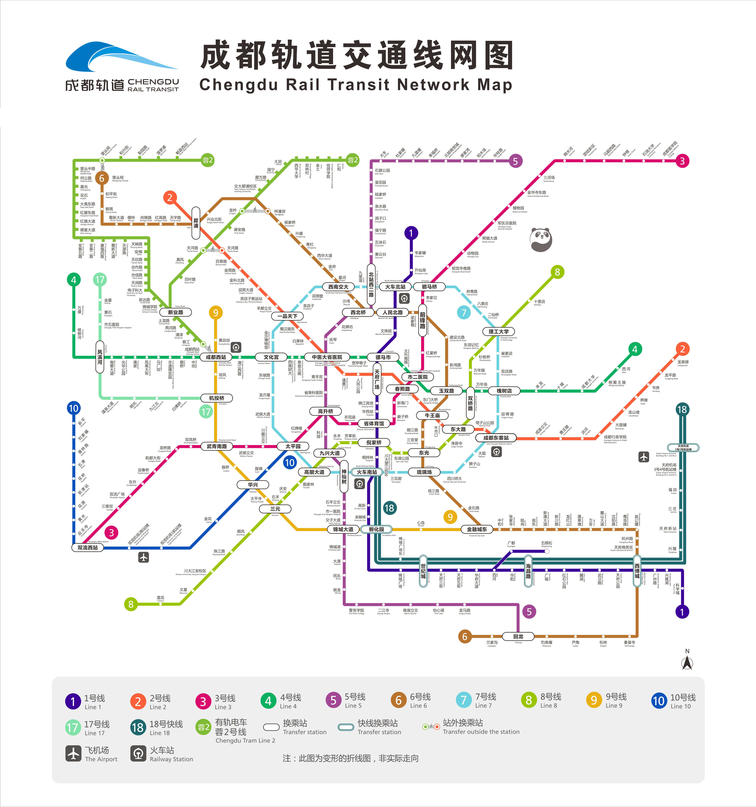
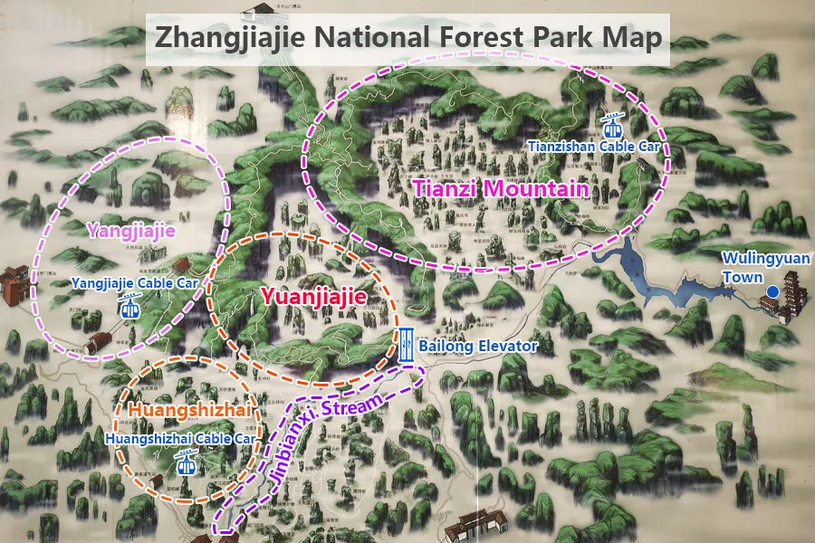
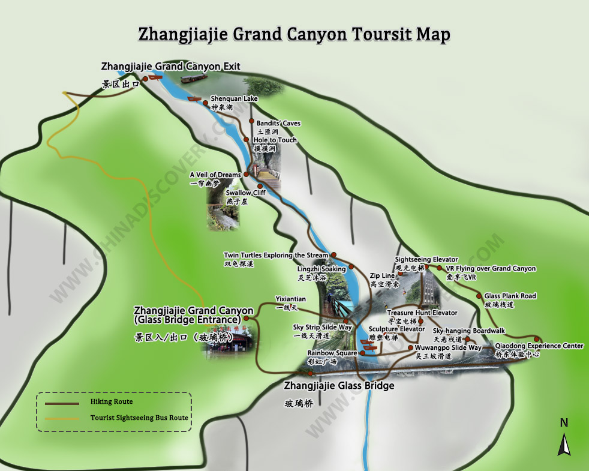

Complete journey
Your itinerary
15 days · Chengdu · Chongqing · Zhangjiajie
Total nights
14
11–25 May 2026
Cities
4
Chengdu · Chongqing · Zhangjiajie + Dujiangyan day trip
Total estimate
A$6,413.84
For both travellers, including flights, hotels, trains, food, tickets and flexible spend.
Trip style
Food-first
Mid-range hotels, local-first dining, key attractions without tourist traps
Chengdu + Dujiangyan day trip
12–16 May · 4 nights
Base at Licheng Hotel (Chengdu Century City Global Center). Giant Panda Base, Wuhou Shrine, Jinli, Kuanzhai Alley, Sichuan Opera, Shuyanfu imperial banquet. Day trip to Dujiangyan irrigation system (UNESCO) and Zhongshuge bookstore.
🚆 Bullet train Chengdu East → Chongqing North · 1h 30min · ¥160–200pp
Chongqing
16–20 May · 4 nights
Sense Scene Hotel at Hongya Cave. Jiefangbei, Luohan Temple, Raffles City, Guanyinqiao, Shancheng Walkway, Ciqikou / 1949, Lianhuashan, iconic hotpot, roasted fish and river views over the Yangtze.
🚆 HSR Chongqing East → Zhangjiajie · ~2 hrs · ¥200–280pp
Zhangjiajie
20–23 May · 3 nights
Jinpu Ju Hotel, Wulingyuan. Tianmen Mountain Route B, Tianzi Mountain, Yangjiajie, Yuanjiajie Avatar viewpoints, Bailong Elevator, Golden Whip Stream, Grand Canyon Glass Bridge and Xibu Street.
🚆 HSR Zhangjiajie → Chengdu East · ~4–5 hrs · ¥200–280pp
Chengdu return
23–25 May · 1 night
Zenec International Hotel (Chengdu Chunxi Tai Koo Li). Yulin Road, Taikoo Li, Wangping Street, FuFu Spa and final meals. Depart Tianfu Airport 1:40 AM 25 May, arrive Melbourne 2:20 PM.
Accommodation summary: Chengdu (4 nights): Licheng Hotel, Century City Global Center. Chongqing (4 nights): Sense Scene Hotel, Hongya Cave. Zhangjiajie (3 nights): Jinpu Ju Hotel, near Wulingyuan park entrance. Chengdu return (1 night): Zenec International Hotel (Chengdu Chunxi Tai Koo Li / 成都春熙太古里正熙酒店). All hotels are booked.
Complete overview · 行程总览
Full Itinerary
完整行程表
All 15 days · scroll horizontally to view · click city tabs for detailed day breakdowns
— |
出发 Melbourne |
成都 Chengdu |
都江堰 Dujiangyan |
成都 Chengdu |
成都→重庆 CDU → CQ |
重庆 Chongqing |
重庆→张家界 CQ → ZJJ |
张家界 Zhangjiajie |
返程成都 ZJJ → CDU |
成都 Chengdu |
回程 CDU / MEL |
||||
| 日期 | Mon 11 May Day 1 |
Tue 12 May Day 2 |
Wed 13 May Day 3 |
Thu 14 May Day 4 |
Fri 15 May Day 5 |
Sat 16 May Day 6 |
Sun 17 May Day 7 |
Mon 18 May Day 8 |
Tue 19 May Day 9 |
Wed 20 May Day 10 |
Thu 21 May Day 11 |
Fri 22 May Day 12 |
Sat 23 May Day 13 |
Sun 24 May Day 14 |
Mon 25 May Day 15 |
| 📍地点 | |||||||||||||||
| 🏨住宿 | |||||||||||||||
| 🥢早餐 | 飞行中 |
5:20am 抵达 Drop bags at hotel lobby. Then: teahouse near People's Park or 钟水饺 red oil wontons. Pick up 广太门饼 Guangtaimen cake nearby.¥10–20pp |
Breakfast near hotel on the way to Panda Base: dan dan mian · Zhong dumplings · Sanxian wonton · Ye'er ba · Laobaigan congee stalls. ¥10–20pp |
7:15am — leave hotel 煎饼道 Jianbing Dao — egg with pork floss and bacon before the 8am metro.Leave by 7:30am — train timing is tight. |
广太门饼 Guangtaimen Cake near Chunxi Rd. ¥20–40pp |
Quick travel breakfast near hotel or Chengdu East Station. Maccas is fine on a travel morning. ¥15-30pp |
小面 Xiaomian near hotel / Kuixing — sidewalk noodle stall, spicy CQ broth. ¥6–10 a bowl |
豆花 Douhua · 油茶 Youcha · 糯米糍饭 sticky rice roll. CQ breakfast trio — street stall near hotel. ¥8–15pp |
Light breakfast — 包子 steamed buns or 粥 rice congee from a street stall. Last morning in CQ, no rush. ¥8–15pp |
Quick breakfast at Chongqing East Station. Bring water and train snacks. Morning train CQ East -> Zhangjiajie |
Hotel breakfast early. Pack water + snacks — food inside the park is expensive. Enter park by 7:30–8am. Timed entry strict. Bring passport. |
Hotel breakfast, then depart for Grand Canyon. Carry passport and pre-booked ticket details. |
Hotel checkout early. Didi to station (~45 min, ¥60–80). |
Breakfast around Zenec International Hotel / Chunxi Road. Last morning — no rush |
飞行中 In flight |
| 🌅上午 |
出发 Departure
8:20PM Mon 11 Sichuan Airlines 3U3886墨尔本 MEL → 成都 TFU~11 hrs |
抵达成都 Arrive TFU
🚇 Metro Line 18 → South Railway Stn → Line 1 → ~50 min ¥15. Or taxi ¥200–250 Drop bags. Stroll 春熙路 Chunxi Road, IFS, Taikoo Li (shops open ~10am).Dawn on Chunxi Rd — magic |
大熊猫 Giant Panda Base
7:30am 成都大熊猫繁育研究基地🚌 Didi ~¥15–25, 30 min Pandas active 7–9am only. Go early.¥55pp — book on WeChat |
钟书阁 Zhongshuge + Wenmiao
8:00am leave Chengdu 🚇 Tianfu Sq → Metro L2 → Xipu (¥5, 50 min) → HSR → DJY (¥15, 20 min). Pre-book! Zhongshuge Bookstore, then Didi to Yangtianwo Square and walk to Wenmiao Mountain Street before lunch. |
Shopping morning
Chunxi Road, IFS Square, Taikoo Li, Kowloon Plaza and Song Cafe before lunch.
|
Chengdu → Chongqing
Train or Didi to Chengdu East. Check out Licheng Hotel, then bullet train to Chongqing.
Chengdu East -> Shapingba: 10:40 -> 11:42 (1h 2m). Other options: 9:25 -> 10:27 or 11:18 -> 12:35 to CQ North. Didi to Sense Scene Hotel and check in / drop luggage. |
奎星楼广场 Kuixing Tower → 观音桥
"I Am in Chongqing" bridge → Sky Pepper → GYQ Food Street → Beicang Creative Park → Beicheng Paradise Walk + crosswalk photo → Taping Community.
🚖 Didi to Guanyinqiao |
人民大礼堂 Great Hall → 李子坝 Liziba → 鹅岭公园 Eling
Soviet-inspired Great Hall exterior → Liziba (train through apartment block) → Eling Park panoramic river views → Testbed 2 creative district.
Free |
Chill morning
Irene: haircut · Reuel: massage. Last relaxed morning in CQ before the mountains. Regroup for afternoon.
|
Train → Zhangjiajie + Tianmen Mountain
Check out and go to Chongqing East Station.
Train options: 8:16 -> 10:42 or 9:52 -> 11:58 from CQ East. About 2 hrs, ¥200-280pp. Arrive Zhangjiajie, store luggage at Tianmen cable car station, then do Tianmen Mountain Route B. |
Tianzishan -> Yangjiajie -> Yuanjiajie
7:30am East Gate Check in with passport, then eco-bus to Tianzishan Cable Car base. Cable car up about 8:15am (¥72), explore Imperial Brush, West Sea, Helong Park, Yunjing Peak, Flower Garden and Yubi Peak. Around 11am, eco-bus to Yangjiajie for Natural Great Wall / optional One Step to Heaven. |
Grand Canyon + Glass Bridge
7:30am depart Bus from Wulingyuan to Grand Canyon visitor centre. Arrive about 8:30am, shuttle to Southwest Gate, then Glass Bridge around 9am. Canyon activities from 9:45-11:30am. |
ZJJ → Chengdu
Hotel checkout. Didi to station (~45 min, ¥60–80).
🚆 ZJJ West → CDU East: 9:55am → 2:20pm (4h 25m, ~$85) Arrive Chengdu ~2:20pm. Check in Zenec International Hotel. |
Taikoo Li + Wangping Street
Taikoo Li, Wangping Street and souvenir shopping. If you want a culture fallback, Chengdu Museum / Wangping / Du Fu Thatched Cottage stays as the backup.
|
In flight → Melbourne |
| 🥡午餐 | 飞行中 |
小明堂 Xiaomingtang Dandan Walk from People's Park 担担面 · 甜水面 · 凉粉 liang fen ~¥30–40pp |
纯阳馆面馆 Chun Yang Guan Noodle Shop 抄手 chaoshou + 担担面 dandan mian ~¥30–40pp |
林记渣渣面 Lin Ji Zhazha Mian — West Street, near Lidui Park 干拌渣渣面 · 伤心凉粉 · 红糖冰粉 📍 10 min walk from Lidui Park exit ~¥30–45pp |
飞大厨 Feidachu (IFS) Inside IFS Square — convenient during shopping morning ~¥60–90pp Keep it light — 8+ courses at Shuyanfu tonight |
花市豌杂面 Huashi Wanza Mian 花市总店 — last bowl before leaving CDU 干溜 dry style · 红油抄手 · add 煎蛋 ~¥20–30pp |
Guanyinqiao Food Street Graze around Guanyinqiao: roubing (jia rou jia dan) and crispy mochi sesame. ~¥30-60pp |
点都德 Diandude (Longhu Shidai) Dim sum — well-regarded CQ branch ~¥60-90pp |
烤匠 Kaojiang Spicy-hot Roasted Fish Times Square branch — walk from hotel ~¥80-120 for two |
Lunch at Tianmen Mountain peak (BK) or, if taking the later train, near the station / cable car area. ¥20-50pp |
Canteen stall inside park (~¥30–50) or bring snacks from hotel. Don't waste golden-light time hunting for food. Pack snacks — eat inside |
Exit park → Wulingyuan town: 剁椒鱼头 steamed fish head · 小炒肉 wok pork ~¥50–80 for two |
Order lunch on the train for delivery at the Chongqing stop (22 min stop). Arrive Chengdu ~2:20pm. |
Lunch at FuFu Spa location or 点都德 Diandude (Chunxi Road branch). |
飞行中 |
| 🏛下午 | 飞行中 overnight |
|
Sit in a teahouse for an hour |
都江堰 Dujiangyan Scenic Area Lidui Gate → Qingxi Garden → Fulong Temple → Flying Sand Weir → Fish Mouth Levee → Anlan Suspension Bridge → Two Kings Temple → Yulei Mountain Square → Guanxian Ancient City. Wander West Street and Yangliu River Street afterwards. ¥80pp · 3–4 hrs |
~4:30pm Head to 东郊记忆 arts district. Arrive Shuyanfu by 5:00pm for costume.🚇 Metro L4 → Erlang Stn + 10 min walk |
解放碑 Jiefangbei walk + Maidashu steamed buns → 罗汉寺 Luohan Temple (500 arhat statues, tucked between skyscrapers) → WaDingDing café opposite temple. Temple free |
山城步道 Shancheng Walkway → 十八梯 Shibati 🚖 Taxi to Jiashi Nursing Home → walk Shancheng Lane Old hillside neighbourhoods, staircases, Yangtze views. Train back from Shibati.Free |
龙湖时代天街 Longhu Shidai Mall
Explore Yinglongmen Gate + Baolun Temple |
下浩里 Xiahaoli → 龙门浩老街 Longmenhao Old St
|
Tianmen Mountain — Route B. Store luggage at cable car station square (¥10 suitcase / ¥5 backpack, open until 19:00). Shuttle bus -> Express cable car -> 999 Steps -> elevators to summit -> East Line to Tianmen Temple -> West Line -> Grand cable car down -> Didi to Wulingyuan Hotel. |
Yuanjiajie: Enchanting Platform, Hallelujah / Avatar Mountain and No.1 Natural Bridge. Around 2:30pm shuttle or walk to Bailong Elevator and descend (¥65), then 2:30-4pm Golden Whip Stream partial walk. Eco-bus back to East Gate and exit for dinner. |
Return to Wulingyuan after Grand Canyon. Snack if you can find Jinyun Shaobing, then chill. Baofeng Lake is possible if energy permits: man-made lake, last boat about 4:30pm, short/mid reviews, about RMB120pp. |
Arrive Chengdu ~2:20pm. Check in Zenec International Hotel, then walk Yulin Road if energy allows. 💡 Suggestion: gentle Taikoo Li stroll + afternoon coffee at REGULAR or Seesaw café |
FuFu Spa — traditional massage + foot treatment. If time opens up, use Chengdu Museum / Wangping Street / Du Fu Thatched Cottage as the backup plan. Last afternoon treat 🧖 |
Arrive Melbourne 2:20pm |
| 🍲晚餐 | 飞行中 |
陈麻婆豆腐 Chen Mapo Tofu — the original (est. 1862) 麻婆豆腐 · 夫妻肺片 · 白米饭 📍 Qintai Lu branch ~¥60–80pp |
琴台路夜市 Fuqin Night Market Graze: 串串 skewers + cold dishes + 钵钵鸡 bobo chicken + 冰粉 ice jelly. ~¥40–70pp |
钟鸭子 Zhongyazi Non-Material Cultural Heritage duck restaurant Or graze 南桥夜市 Nanqiao Night Market before return train. ~¥50–80pp 🚆 Last HSR ~8pm — check schedule |
蜀宴赋 SHUYANFU 👘 Imperial Banquet — 8+ courses + live performance 6:30pm show · Arrive 5pm for costume Han/Tang/Song dynasty court life. NPC characters, one performance per dish. Jasmine plum wine included.¥298–498pp · Costume +¥100–200pp · WeChat booking, 7 days ahead Sells out. Book immediately on arrival in China. |
Xiao Dadong, Raffles City Branch Peking duck dinner at Raffles City before the riverfront / drone-show evening. ~¥100-180pp |
Hotpot near hotel / Kuixing 井到吃老火锅 or nearby cluster First proper CQ hotpot — order yuan yang (half spicy / half clear). Dessert: tang shui at the Dajingxiang shop ~¥80-120pp |
Dinner at 磁器口 Ciqikou Ming Dynasty lanes — eat in the back alleys, not tourist front Metro Line 1 -> Ciqikou ~¥60-80 for two |
Dinner at 莲花山 Lianhuashan — 丁老头烤肉 or 皇游明 BBQ, or take the cable car back and eat in CBD. ~¥80-120 for two |
香花烧烤 Xianghua Skewers Skewers right by the hotel, or anywhere close around town ~¥60-100 for two |
业华湘 Yehua Xiang or 索溪山寨 Suoxi Shanzhai — Tujia local food. Then head to Charming Xiangxi Show 🎭. ~¥80–120 for two |
Xibu Street night market from about 5:00pm. Food stalls, local BBQ, Tujia snacks and bars after the Grand Canyon day. ~¥80-120 for two |
⬜ TBD — not yet decided Dinner around Yulin Road.💡 Suggestion: Xiaolong Kan Hotpot (~¥110–150pp, go at 9pm to skip queue) |
⬜ TBD — dinner at spa location or nearby 💡 Suggestion: 小龙坎 Xiaolong Kan Hotpot for a farewell dinner (~¥110–150pp, 9pm to skip queue) · or Diandude dim sum for something lighter |
飞行中 |
| 🌙晚上 |
出发 Departure 🛫
8:20PM Board 3U3886. Overnight to Chengdu. |
SKP Chengdu — light shows 🎆
Light shows every 30 min from 7:30 PM, ending 10 PM. Illuminated bamboo fountain displays. B&C dessert shop (located inside SKP mall) — perfect after the light show.
📍 SKP Chengdu complex |
Pick a riverside bar and stay a while |
Return HSR to Chengdu.
🚆 Last train ~8pm from Lidui Park. ~1hr 30min home. Early night — big day tomorrow. |
Shuyanfu banquet ends ~8:30pm. Photos in costume outside 东郊记忆 arts district — beautiful at night. Didi home. Full and content.
|
Walk around Raffles City or take a two-river cruise from Chaotianmen Pier 8.
9pm drone show options: Raffles City rooftop / Gateway Park, Chaotianmen Station exit 8, peninsula tip by the river, Zhengzhou Plaza on Nanbin Street, or Changjiahui Shopping Park. |
River Terrace at Regent Chongqing — rooftop drinks overlooking the river. Then chill at the park opposite Hongya Cave and walk Qianmen Bridge to HYD.
|
Chill back near hotel after Ciqikou / 1949. Keep the night easy before the relaxed Tuesday morning.
|
莲花山 Lianhuashan — drinks overlooking the skyline.
Take the cable car back before 9:30pm when lights close. |
Early night in Wulingyuan. Download park map offline. Charge all devices. Set alarm 6:30am.
Walk to East Gate to scope entry queue |
7:30pm Charming Xiangxi Grand Show (¥158-178). Late: register Day 2 park entry at hotel if required.
|
Pack bags. Last look at Wulingyuan at night. Set alarm 7am for early checkout.
|
玉林路 Yulin Road — Chengdu's best local bar strip. Cocktail or craft beer.
More local than Jiuyanqiao |
Departure Night 🛫
Head to 天府国际机场 Tianfu Airport (TFU) by 11pm.
🚇 Metro Line 18 → TFU: ~50 min ¥20. Or taxi ¥200–250. Departs 1:40AM Mon 25 May TFU not Shuangliu — double-check your boarding pass! |
抵达 Arrive Melbourne
2:20PM Mon 25 May |
China · Days 1–5
Chengdu
成都 · 天府之国
11–16 May · overnight flight + 4 nights · Arrive 5:20 AM Day 2
1
Monday 11 May
Depart Melbourne — Sichuan Airlines 3U3886 to Chengdu Tianfu
›
8:20 PM
Sichuan Airlines 3U3886 departs — Melbourne (MEL) → Chengdu Tianfu (TFU) Arrive 5:20 AM Tue 12 May
Airbus A330-200 · Economy · ~11 hrs. Overnight flight into Chengdu Tianfu International Airport (TFU), then transfer to Licheng Hotel and drop bags before exploring.
Hotel: Licheng Hotel at Chengdu Century City Global Center. Getting from TFU airport: Metro Line 18 → South Railway Station, change to Line 1 → ~50 min, ¥10. Or taxi ~¥80–100, 45 min. Hotel won't have your room ready until ~2pm on arrival day — drop bags at the lobby and explore immediately.
2
Tuesday 12 May
Arrive Chengdu — People's Park, Chen Mapo Tofu, SKP light show
›
5:20 AM
Arrive Chengdu Tianfu (TFU)
Drop luggage at hotel lobby. Room won't be ready until ~2pm. The city is yours in the quiet morning — locals doing tai chi in Chunxi Road, shops not yet open.
Breakfast
Teahouse and/or 钟水饺 Zhong Dumplings · 广太门饼 Guangtaimen Cake ¥10–20pp
Classic Chengdu morning — red oil wontons or a teahouse pot near People's Park. Guangtaimen cake is a Chengdu institution near People's Park; grab some for now and save some for Friday's breakfast.
Morning
人民公园 People's Park — morning tea & boat rowing
Chengdu's beloved public park. Locals doing tai chi, ballroom dancing, mahjong — and the famous 相亲角 marriage market corner. Find a teahouse inside (¥15–25 a pot, free refills all morning). Optional: rent a rowboat on the lake. This is the most genuine slice of Chengdu daily life you'll find.
Lunch
小明堂 Xiaomingtang Dandan & Tiansuimian ~¥30–40pp
Walk from People's Park. Order: 担担面 Dàndàn miàn · 甜水面 Tiánshuǐ miàn · skewers on the table · 凉粉 Liang fen or liang mian · 红糖豆花 Hóng táng dòu huā
Afternoon
武侯祠 Wuhou Shrine + 锦里 Jinli Ancient Town Wuhou Shrine ¥50pp
Three Kingdoms temple complex — shaded grounds, historic halls, some of the best Chengdu street food in Jinli next door. Get 兔头 rabbit heads and 串串 skewers from the stalls inside Jinli. More local-facing than Kuanzhai Alley.
Dinner
陈麻婆豆腐 Chen Mapo Tofu — the original ~¥60–80pp
Opened 1862. Order: 麻婆豆腐 (the tofu), 回锅肉 (twice-cooked pork belly, smoky + rich), 鱼香茄子 (fish fragrant eggplant), 蒜泥白肉 (garlic pork slices in chilli oil, cold dish).
7:30 PM
SKP Chengdu — light shows every 30 min from 7:30 PM
Light shows run every 30 minutes starting at 7:30 PM, ending at 10 PM. Free to watch the iconic illuminated bamboo fountain displays. B&C nearby for dessert after. The perfect gentle evening cap to a big travel day.
Day 2 — locations
3
Wednesday 13 May
Giant Panda Base, Kuanzhai Alley, Fuqin Night Market
›
Breakfast
Breakfast near hotel before Panda Base ¥10–20pp
Grab dan dan mian, Zhong dumplings, Sanxian wonton, Ye'er ba or Laobaigan congee stalls on the way. Keep it quick so you can still arrive before the pandas nap.
7:30 AM
成都大熊猫繁育研究基地 Giant Panda Base ¥55pp — book on WeChat/Trip.com night before
Go early — pandas feed and play 7–9 AM. Enter via South Gate if prioritising Hua Hua and accepting bigger crowds, or West Gate for a calmer start. Follow signs to the giant panda areas first, then red pandas. Allow 2–2.5 hrs.
Lunch
纯阳馆面馆 Chun Yang Guan Noodle Shop ~¥30–40pp
Order fish-fragrant pork rib noodles, red oil wontons, steamed egg with mince + seaweed soup, or jiaoxiang beef noodles. If timing is awkward, walk around Kuixinglou instead; Rongrong beida pugai noodles remains the alternate hand-pulled noodle stop.
Afternoon
奎星楼街 Kuixinglou Jie + 宽窄巷子 Kuanzhai Alley
Kuixinglou Jie for indie coffee and 易老大蛋烘糕 egg pancake, then Kuanzhai Alley for courtyard lanes and teahouses. Chill back at the hotel before Fuqin Night Market.
Dinner
琴台路夜市 Fuqin Night Market — graze local ~¥40–70pp
Not a tourist market — locals eating here after work. 串串 skewers, cold dishes, 钵钵鸡 bobo chicken, 冰粉 ice jelly. Graze as many stalls as you want.
📍 Must-try stalls:
蛋包洋芋 Dan Bao Yang Yu — mashed potato mixed with pickled radish and herbs, wrapped in a thin omelette. Mid-market area. Ask for "Bù yào zhéěrgēn" (不要折耳根) to skip the fish mint.
怪老头甜不辣 Weird Old Man's Sweet & Spicy Fried Skewers — tián bù là, lightly battered skewers fried crispy, served sweet and spicy. Look for the old man's stall.
琴台一号烧烤 Fuqin No. 1 BBQ — signature: beef and pork belly, flame-grilled. Usually packed with locals — the queue is your guide.
冰粉 Bīng fěn — cold clear jelly dessert with brown sugar, ginger, nuts, rose. ¥5–8. The ideal market ender.
Evening
九眼桥 Nine Eyes Bridge / Anshun Bridge
Walk along the lit-up Jin River from Nine Eyes Bridge toward Anshun Bridge, then settle into the Jiuyan Qiao bar strip if you still have energy. ¥30–50 a drink.
Day 3 — locations
4
Thursday 14 May
Dujiangyan Day Trip — Zhongshuge Bookstore, Wenmiao Street, Dujiangyan Scenic Area, Blue-tear River Walk
›
Breakfast
煎饼道 Jianbing Dao ¥10–15pp
Egg with pork floss and bacon before the Dujiangyan metro/HSR transfer. Keep it quick: Tianfu Square → Line 2 → Xipu starts around 8 AM.
8:00 AM
Metro + HSR to Dujiangyan
Tianfu Square Station → Metro Line 2 → Xipu (~50 min) → cross platform → high-speed rail → Dujiangyan Station (~20 min). Total ~1h 10min.
~9:30 AM
钟书阁 Zhongshuge Bookstore ⭐ Free entry
One of the world's 10 most beautiful bookstores. Mirrored infinity ceilings, C-shaped walnut shelves, surreal cathedral-like space. Small café inside.
~10:30 AM
Didi to 仰天窝广场 Yangtianwo Square → 文庙山街 Wenmiao Mountain Street
5 min walk from the square to Wenmiao Mountain Street — a historic lane filled with teahouses (stop for tea), street vendors, and local life.
Lunch
文买街 Wenmai Street — 园买园 Yuamyuan Noodle Restaurant
Local noodle lunch on Wenmai Street before heading into the scenic area.
Afternoon
都江堰景区 Dujiangyan Scenic Area ¥80pp · 3–4 hrs
Main route: Lidui Gate → Qingxi Garden → Fulong Temple (Bottle-Neck Channel) → Flying Sand Weir → Fish Mouth Levee → Anlan Suspension Bridge → Two Kings Temple → Yulei Mountain Square → Guanxian Ancient City. Wander West Street (Xijie) and Yangliu River Street afterwards.
Alt route: Enter Gate 6 (Qinyan Tower 秦堰楼) → Erwang Temple → Anlan Suspension Bridge → Yuzui Fish Mouth → Feishang Spillway → Baopingkou → Fulong Temple → exit South Gate.
Alt route: Enter Gate 6 (Qinyan Tower 秦堰楼) → Erwang Temple → Anlan Suspension Bridge → Yuzui Fish Mouth → Feishang Spillway → Baopingkou → Fulong Temple → exit South Gate.
Dinner
钟鸭子 Zhongyazi or Night Market @Yangliu Street
Zhongyazi is a Non-Material Cultural Heritage duck restaurant — excellent for a final Dujiangyan meal. Or graze the Night Market stalls on Yangliu Street in the Old Town.
After dinner
Blue-tear river walk
Walk along the Neijiang river from Nanqiao bridge upstream, passing the Tianfuyuan bridge, ending at Guanxian Xuanhua Gate. Then Didi back to Dujiangyan Railway Station for the return train to Xipu (or all the way to hotel). Last HSR ~8pm.
Day 4 — Dujiangyan locations
5
Friday 15 May
Shopping day — Chunxi Road, IFS, Taikoo Li, 蜀宴赋 Imperial Banquet 👘
›
Breakfast
广太门饼 Guangtaimen Cake ¥5–10pp
Pick up from near People's Park — the ones you may have spotted on Day 2. A Chengdu classic not to miss.
Morning
Shopping — 春熙路 Chunxi Road · IFS Square · 太古里 Taikoo Li · Kowloon Plaza
This is the dedicated shopping morning. Chunxi Road pedestrian mall leads into IFS (underground food court has great snacks). Taikoo Li for boutiques + coffee. Kowloon Plaza for a different vibe. Also check out Song Café while in the area.
Lunch
飞大厨 Feidachu (IFS) ~¥60–90pp
Inside IFS Square on Chunxi Road — convenient during your shopping morning. Keep it light; you have the Shuyanfu imperial banquet (8+ courses) tonight.
~1:00 PM
Cosmo + 东郊记忆 Eastern Suburb Memory arts district
Didi to Cosmo first, then continue to the converted factory arts district where Shuyanfu is located. Browse galleries before the banquet. Arrive at Shuyanfu by 5:00 PM — you need 1.5 hrs for hair + costume before the 6:30 PM show.
6:30 PM
蜀宴赋 SHUYANFU Imperial Banquet 👘 ¥298–498pp + ¥100–200pp costume · Book via WeChat 7 days ahead
Immersive Han/Tang/Song dynasty banquet dinner show — 8+ seasonal courses, one live performance per dish, NPC characters (Li Bai, Yang Guifei), costumed servers. Jasmine plum wine included. Arrive at 5:00 PM for Hanfu costume + hair styling (strongly recommended). Show runs ~98 min. Food quality is genuinely excellent — not just a set dressing. Ends ~8:30 PM. Take photos in costume outside the 东郊记忆 arts precinct afterwards — beautiful at night.
Day 5 — locations
China · Days 6–9
Chongqing
重庆 · 山城火锅
16–20 May · 4 nights · Sense Scene Hotel, Hongya Cave
Hotel: Sense Scene Hotel (感觉场景酒店) — Hongya Cave area, excellent location for night views. Chongqing's spice is a full level above Chengdu — "mild" (微辣) here equals medium-spicy elsewhere. For hotpot, order 鸳鸯 (half-half: one spicy, one clear broth) or 三格锅 (three broths: spicy + bone broth + tomato). Always accept aprons at hotpot restaurants.
6
Saturday 16 May
Check out, train to Chongqing, Jiefangbei, Luohan Temple, Raffles City & drone-show night
›
Morning
Check out of Licheng Hotel — breakfast + last Chengdu bowl before train
Grab a quick bite near hotel, then train to Chengdu East Station.
~10 AM
Bullet train Chengdu East → Chongqing ¥160–200pp · 1h–1h 17min
10:40→11:42 (Chengdu East to Shapingba) · Alt: 9:25→10:27 to SPB or 11:18→12:35 to Chongqing North (1h 17m). Book on Trip.com or 12306. Didi from station to Sense Scene Hotel. Check in / drop luggage.
~12:30 PM
Arrive Chongqing — Didi to Sense Scene Hotel
Arrive ~11:42am or ~12:35pm depending on train. Didi from the station to Sense Scene Hotel, then check in / drop luggage before heading into Jiefangbei.
Lunch
花市豌杂面(花市总店) ~¥30pp
Order: 花市豌杂面 Huā Shì Wān Zá Miàn, add 煎蛋 (order 干溜 (gān liū) for dry) and 红油抄手 · 两 (liǎng) = 50 grams; 二两 (èr liǎng) = 100g of noodles (medium); 三两 (sān liǎng) = 150g of noodles (large)
Afternoon
解放碑 Jiefangbei Walk + 罗汉寺 Luohan Temple + 瓦顶顶 WaDingDing café
Walk the Liberation Monument precinct. Snack: Maidashu Yuanyang Steamed Buns nearby. Visit Luohan Temple — a Buddhist temple wedged between skyscrapers, 500 arhat statues, incense smoke, genuinely moving. Then coffee at WaDingDing café directly opposite the temple.
Dinner
Xiao Dadong, Raffles City Branch — Peking duck ~¥100–180pp
Dinner at Raffles City after Jiefangbei / Luohan Temple. This lines up naturally with the evening riverfront and drone-show options.
~8 PM
Raffles City riverfront, two-river cruise, or 9 PM drone show
Walk around Raffles City or take a two-river cruise from Chaotianmen Pier 8. Drone-show viewing options: rooftop of Raffles City Mall to Gateway Park, Chaotianmen Station exit gate 8, the tip of the peninsula by the river, Zhengzhou Plaza on Nanbin Street, or Changjiahui Shopping Park.
Day 6 — locations
7
Sunday 17 May
Kuixing Tower, Guanyinqiao, Shancheng Walkway, Shibati, hotpot & Hongya Cave
›
Breakfast
小面 Xiaomian near hotel / Kuixing ~¥8–12pp
Chongqing's iconic sidewalk noodles — spicy, oily, addictive. Any hole-in-the-wall near the hotel. This is what locals eat every morning.
Morning
奎星楼广场 Kuixing Tower Square → Didi to 观音桥 Guanyinqiao
Start at Kuixing Tower Square for the views, then Didi to the Guanyinqiao district. Walk the "I Am in Chongqing" scenic bridge → Sky Pepper → Guanyinqiao Food Street and surrounding shopping area → Beicang Cultural and Creative Park (artsy converted warehouse district) → Beicheng Paradise Walk and the famous crosswalk photo spot → Taping Community.
Lunch
Guanyinqiao Food Street ~¥30–60pp
Snack-lunch around Guanyinqiao: roubing (jia rou jia dan), crispy mochi sesame, and whatever looks good in the food-street cluster before moving south for the hillside walk.
Afternoon
山城步道 Shancheng Walkway → 十八梯 Shibati
Taxi to Jiashi Nursing Home, then walk straight into Shancheng Lane — old hillside neighbourhoods, steep staircases, quiet courtyards, Yangtze panoramas. Connects naturally into Shibati (Eighteen Stairs) historic district. Train back from Shibati area to hotel when done.
Dinner
Hotpot near hotel / Kuixing area ~¥80–120pp
井到吃老火锅 or a good spot in the Kuixing Tower cluster. Your first proper Chongqing hotpot — order yuan yang (half spicy / half clear) if you're cautious. Dessert: tang shui near Dajingxiang.
Evening
River Terrace at Regent Chongqing + Hongya Cave walk
Drinks overlooking the river at Regent Chongqing, then chill at the park opposite Hongya Cave. Walk along Qianmen Bridge to the stilt-house complex. Hotel is steps away.
Day 7 — Chongqing locations
Chongqing food checklist — very different from Chengdu
油茶 Youcha (breakfast rice porridge + chili + crispy dough — only in CQ). 重庆小面 Xiaomian ~¥8/bowl (sidewalk noodles). 石蹦牛肉面 beef noodles (1988 institution). 重庆火锅 Hotpot (the real thing — significantly spicier than Chengdu). 老甘家小龙虾 Garlic crayfish (only here). 豆花饭 Douhua (savory soft tofu over rice — unique to CQ). Spice note: CQ "mild" (微辣) ≈ Chengdu "spicy" (辣). Order accordingly.
8
Monday 18 May
Great Hall, Liziba Station, Testbed 2, Diandude, Ciqikou & 1949 Show
›
Breakfast
豆花 Douhua · 油茶 Youcha · 糯米糍饭 sticky rice roll ¥8–15pp
Chongqing breakfast trio — silky douhua, the famous oily rice porridge with crispy crumbs (youcha, only found in CQ), and glutinous rice rolls. Street stalls near hotel.
Morning
人民大礼堂 Great Hall of the People → 李子坝站 Liziba Station → 鹅岭公园 Eling Park + Testbed 2
Start at the Great Hall of the People — extraordinary Soviet-inspired grand hall, free to view exterior. Then Didi to Liziba Station (alt: train from Linjiangmen Line 2) — the train literally passes through floors 6–8 of an apartment block. Walk to Eling Park for sweeping unobstructed views over both rivers and the entire mountain city. Then Testbed 2 / Eling Second Factory (鹅岭二厂) nearby — converted heritage industrial district, galleries, cafés.
Lunch
点都德 Diandude (Longhu Shidai Branch) ~¥60–90pp
Dim sum at the Longhu Shidai branch — a clean mid-day reset after Great Hall, Liziba and the Eling / Testbed 2 loop.
Afternoon
Longhu Shidai Mall → Ciqikou Ancient Town / 1949 Show
Shop Longhu Shidai (there are stores like Salomon & Adidas), then Didi to Ciqikou. If booking the 1949 Show, choose rotating seats. Explore Ciqikou Ancient Town around Yinglongmen Gate and Baolun Temple before dinner.
Dinner
Dinner at 磁器口 Ciqikou Ancient Town ~¥60–80 for two
Eat in Ciqikou's back alleys rather than the tourist-facing front street stalls. Keep it easy and close to the show / ancient-town area.
Evening
Chill back near hotel
Return from Ciqikou / 1949 and keep the night gentle. Tomorrow is the looser Chongqing day.
Day 8 — Chongqing locations
9
Tuesday 19 May
Chill morning, Kaojiang roasted fish, Xiahaoli, Longmenhao & Lianhuashan
›
Breakfast
包子 Baozi or 粥 Zhou congee near hotel ¥8–15pp
Light breakfast before a relaxed morning — steamed buns or rice congee from a street stall. Last full morning in Chongqing, so no rush.
Morning
Chill morning — Irene: haircut / Reuel: massage
A slow morning before the big Zhangjiajie days ahead. Split up or find your own thing — Chongqing has excellent foot massage and traditional barbershops. Regroup for lunch.
Lunch
烤匠 Kaojiang Spicy-hot Roasted Fish (Times Square Branch) ~¥80–120 for two
Walk from the hotel to the Times Square branch. Order the signature spicy roasted fish with tofu and vegetables in the broth.
Afternoon
下浩里 Xiahaoli + 龙门浩老街 Longmenhao Old Street
Xiahaoli, then Longmenhao Old Street. Stop at Xi Yue He Zi Box for tea and cakes, and Soso House cafe. Then walk or Didi to Huangye Chatan at Lianhuashan to catch the sunset around 7:40pm.
Dinner
Dinner at Lianhuashan ~¥80–120 for two
丁老头烤肉 or 皇游明 BBQ near the hillside. Or take the cable car back and eat in the CBD if that feels easier.
Evening
Lianhuashan drinks + cable car back
Drinks overlooking the Chongqing skyline. Take the cable car back before 9:30pm when the lights close, then pack bags and buy water / snacks for Zhangjiajie.
Day 9 — Chongqing locations
China · Days 10–12
Zhangjiajie
张家界 · 阿凡达悬浮山
20–23 May · 3 nights · Jinpu Ju Hotel, Wulingyuan
Getting there: Chongqing East → Zhangjiajie (张家界): ~2 hrs HSR, $50pp. Depart Chongqing 8:16 AM → arrive 10:42 AM. Then Didi/taxi to Wulingyuan Town: 30 km, 45 min, ¥80–100 or Bus from the station, ¥20pp Stay in Wulingyuan, not Zhangjiajie city — saves 1hr+ commute each park day. Getting back: Zhangjiajie → Chengdu East: ~4–5 hrs HSR, $85pp. Depart ~9 AM → arrive Chengdu ~2 PM.
Park entry system (2025 update): Zhangjiajie National Forest Park now uses timed entry slots. Book your exact date and time window in advance. Bring your passport — facial recognition is used at the entrance and for all cable cars and the elevator. For Day 2 entry, you must register with park staff in person on Day 1 after your first entry is verified. Open 07:00–18:00, last entry 17:00.
10
Wednesday 20 May
Travel CQ → Zhangjiajie + Tianmen Mountain, check in Wulingyuan
›
Morning
Check out Sense Scene Hotel → train to Zhangjiajie ¥200–280pp · ~2 hrs
Two options from Chongqing East Station: 8:16 AM → arrive 10:42 AM or 9:52 AM → arrive 11:58 AM. Book on Trip.com or 12306 — popular route, book ahead. Bring snacks and water for the train.
~Noon
Arrive Zhangjiajie · quick lunch before Tianmen Mountain
If you arrive early, eat near the station / cable car area. If timing pushes later, lunch at Tianmen Mountain peak (BK is fine). Keep it quick: the mountain is the afternoon.
Early Afternoon
天门山 Tianmen Mountain — Route B Cable car + 999 Steps: ~¥258pp
Walk 5–10 min from the station to the Tianmen Mountain Cable Car Lower Station. Drop luggage there first — storage at the cable car station square (¥10/suitcase, ¥5/backpack per day; open until 19:00, bookable via "TujianDan" WeChat mini-program). Route B: Shuttle bus → Express cable car up → 999 Steps (steep stone staircase up to the Heaven's Gate arch) → Elevators to the summit plateau → East Line trail to 天门寺 Tianmen Temple → rest and views → West Line → Grand cable car back down → Pick up luggage → Didi to Wulingyuan Hotel (~45 min, ¥80–100). Check in to Jinpu Ju Hotel.
Dinner
香花烧烤 Xianghua Skewers, or somewhere close in Wulingyuan ~¥60–100 for two
Keep arrival night simple after Tianmen Mountain: skewers near the hotel or any easy dinner around town.
Evening
Walk around Wulingyuan village + early rest
Buy water, fruit, and snacks from a convenience store for tomorrow — food inside the park is limited and overpriced. Confirm your timed park entry slot. Set alarm for 6:30 AM. Two big days in the mountains ahead.
Day 10 — locations
11
Thursday 21 May
Zhangjiajie National Forest Park — Tianzi Mountain → Yangjiajie → Yuanjiajie → Bailong Elevator
›
7:30 AM
Arrive at East Gate (Wulingyuan Sign Gate) Pre-book online with passport number
Check in with your passport; facial recognition is used after first registration. Get the Trip.com combo for Zhangjiajie + Grand Canyon activities if available.
7:45 AM
Eco-bus to Tianzishan Cable Car base station
Board the free in-park shuttle from the East Gate toward Tianzi Mountain. This route starts high at Tianzishan and descends later by Bailong Elevator.
8:15 AM
Tianzishan Cable Car — ascend to 1,262m summit ¥72
One-way cable car up — 6-minute ride lifts you 400m with sweeping views of sandstone pillars. Early morning is best for visibility and to beat tour groups. Mist below the pillars is a bonus.
8:15 – 10:30 AM
Explore 天子山 Tianzi Mountain scenic area
Free internal shuttle buses (run every 10 mins) connect key viewpoints: 御笔峰 Imperial Brush Peaks — the signature spire cluster; 贺龙公园 He Long Park — flat walking loop with panoramic canyon views; 天子阁 Tianzi Pavilion — elevated 360° lookout (best before 9 AM before tour groups arrive).
11:00 AM
Eco-bus to Yangjiajie
Ride to the Aolong Village parking lot. Focus on Natural Great Wall; add One Step to Heaven only if energy and timing are good.
12:30 PM
Yuanjiajie — Avatar Mountain and key viewpoints
If possible, stop at Arranging Battles Platform, then walk Yuanjiajie: Enchanting Platform, Hallelujah / Avatar Mountain, and No.1 Natural Bridge.
1:00 PM
Lunch near Yuanjiajie ¥40–60 per meal
Basic canteens sell rice dishes and noodles. The better play is to bring snacks from Wulingyuan and eat quickly with a view.
2:30 PM
Walk or shuttle to Bailong Elevator and descend ¥65
Descend by Bailong Elevator, then continue into the lower valley route.
2:30 – 4:00 PM
金鞭溪 Golden Whip Stream — partial walk
Do a partial Golden Whip Stream walk from the Bailong / Shui Rao Si Men side. Turn around when ready; do not carry food openly around macaques.
4:00 PM
Eco-bus back to East Gate
Exit to Wulingyuan town and chill at hotel, before heading out for dinner and the evening show.
Dinner
Dinner — 业华湘 Yehua Xiang or 索溪山寨·湘西民间土菜 ~¥80–120 for two
Wulingyuan town is 5 minutes from East Gate. Yehua Xiang: order stone-pot fish (石锅鱼) or red-braised pork (红烧肉) — check Amap for deal. Alt: Suoxi Shanzhai (魅力湘西店): order Tujia layered braised pork (土家扣肉). Bold Hunan flavours — completely different from Sichuan food. Then head to the Charming Xiangxi show.
7:30 PM – 9:00 PM
魅力湘西 Charming Xiangxi Grand Show 🎭 ¥158–178 (~A$33–37)
Evening cultural performance at Wulingyuan District. Two-part show: indoor folk culture (Miao drumming, crying wedding ceremony, Maogus tradition) and outdoor bonfire celebration with classic Xiangxi stunts and dance carnival. Authentic Western Hunan cultural experience. 1.5–2 hours. Book in advance — adjacent to Expert Village Hotel at park entrance.
Late evening
Return to hotel and rest
Register Day 2 park entry with staff in person at hotel — required by 2025 policy. Early night after a full day of hiking and cultural immersion.
Day 11 — Zhangjiajie locations
12
Friday 22 May
Grand Canyon, Glass Bridge & Baofeng Lake — Full day Zhangjiajie adventure
›
7:00 AM
Breakfast and depart for Grand Canyon
Eat at hotel or grab something quick near East Gate. Catch the early bus from Wulingyuan Bus Station to Grand Canyon (first departure ~7:20–7:40 AM, every 40 mins, ¥12/person, 40–50 mins). Get there before heat and queue times blow out. Book Grand Canyon ticket online the night before (Trip.com, Klook, or Zhangjiajie Travel Assistant WeChat mini-program) — you'll need your passport number. Recommended booking on Trip.com: "Zhangjiajie Grand Canyon (Glass Bridge) + Zhangjiajie National Forest Park Admission Ticket + 5 of 7 Grand Canyon Attractions Combo" — ~A$85 (includes Glass Bridge + 5 activity choices + park entry). Best value for the full experience.
8:30 AM
Arrive at Grand Canyon visitor centre
Bus drops you at tourist distribution centre at mountain base. Take free scenic area shuttle bus (15 mins) to Southwest Gate at mountain top — this is Glass Bridge entry. Do not walk; too far. Collect tickets or scan pre-booked QR code at gate.
9:00 AM
云天渡 Glass Bridge (Yuntiandu) ¥178–298
430m span, 300m above canyon floor — world's longest and highest glass-bottomed bridge. Nearly 5cm thick glass tested to hold 800 people. Shoe covers mandatory (provided) to keep glass clear. Look straight down through the floor for full vertigo effect. Far end disappears into mist on cloudy mornings. Go first — quietest between 8:30–10 AM. Queues can hit 1–2 hours by midday in peak season.
9:45 – 11:30 AM
Canyon activities — choose your adventure
If you've bought the ¥298 combo, choose 5 from 7 available. Top picks: High-altitude zipline (300m across canyon at 302m above floor — 1 min, smooth, canyon walls fill your vision — highlight) · One-Line Sky slide (multi-level descent down canyon face, fun and fast, good shoes essential) · VR Flying experience (simulated flight, 15 mins, decent opener) · Sightseeing elevator (glass-walled descent, scenic + practical, saves your knees) · Via ferrata (168m iron-rung cliff traverse at 1,500m, serious exposure, helmet + harness). Zipline weight limit: 40–90kg. Outside range? Use Sculpture or Treasure Hunt elevators.
11:30 AM – 1:00 PM
Canyon floor walk + Shenquan Lake boat exit
Descend to canyon floor (via elevator or slide) and follow 3–4km trail along canyon bottom — the exhale after adrenaline. Waterfalls, turquoise streams, touch caves, mossy cliffs, cool air even in summer. Highlights: 彩虹广场 Rainbow Square (waterfall spray creates natural rainbow); Turtle Exploring Stream (distinctive rock formation); 摸天洞 Touch Cave (low karst cave to duck through). Trail ends at Shenquan Lake — free 10-minute boat ride across calm green water to North Gate exit with canyon walls rising on both sides. Less crowded than bridge area above — take your time.
1:00 PM
Lunch near canyon exit or on bus ~¥30–50
Basic food stalls and canteen near North Gate — noodles, rice dishes, snacks. Quality functional. Better to eat here and save time, or bring packed lunch from Wulingyuan. Take free shuttle from North Gate back to visitor centre, then return bus to Wulingyuan (¥12, 40–50 mins). Back by 2:00–2:30 PM.
Early Afternoon
Snack in Wulingyuan + chill ¥10–20
Back in Wulingyuan after Grand Canyon. Look for 金云烧饼 Jinyun Shaobing (a local Zhangjiajie specialty) if you can find it. Rest feet, recharge.
2:30 PM
⬜ TBD — 宝峰湖 Baofeng Lake (optional — not yet decided)
Not confirmed yet. If energy permits — Baofeng Lake is only 1.5km from Wulingyuan town (5-min taxi, ~¥10). Man-made lake surrounded by karst peaks, 30-min boat cruise, waterfall filming location. Last boats ~4:30 PM; last entry 5:00 PM. Note: ~¥120pp is pricier than other activities — may not be worth it if tired after Grand Canyon day. 💡 Suggestion: skip if legs are tired; the Grand Canyon is already a full day. Consider saving energy for the evening show and good dinner instead.
5:00 PM
溪布街 Xibu Street night market — dinner ~¥80–120 for two
Xibu Street at base of Baofeng Lake — Wulingyuan's most atmospheric night street. Comes alive from 5 PM. Food stalls, local BBQ, Tujia snacks, bars. Best place for relaxed dinner after big day. Look for grilled meat skewers (烤串), spicy crawfish if in season (小龙虾), cold Tujia rice wine.
Evening
Pack bags + early rest
Didi to Zhangjiajie station is ~45 min tomorrow morning. Set alarm for 7 AM. One last look at the karst peaks from the hotel window.
Day 12 — Zhangjiajie locations
China · Days 13–15
Chengdu return
成都 · 归途最后一夜
23–25 May · 1 night · Zenec International Hotel, Chengdu Chunxi Tai Koo Li
Hotel: Zenec International Hotel (Chengdu Chunxi Tai Koo Li / 成都春熙太古里正熙酒店) — booked for the final Chengdu night. Depart from Chengdu Tianfu Airport (TFU) — not Shuangliu. Metro Line 18 direct, ~50 min, ¥20. Check in at airport by 11pm for the 1:40 AM departure.
13
Saturday 23 May
Travel Zhangjiajie → Chengdu (return), check in Zenec, Yulin Road
›
Morning
Hotel checkout → Didi to station → HSR to Chengdu ¥200–280pp · ~4–5 hrs
Didi from Wulingyuan to Zhangjiajie station: ~45 min, ¥60–80. Train: ZJJ West → Chengdu East 9:55 AM → 2:20 PM (4h 25m, ~$85). Tip: order lunch on the train for delivery at the Chongqing stop (22-minute stop en route — a good chance to grab food). Arrive Chengdu East 2:20 PM. Check in to Zenec International Hotel (Chengdu Chunxi Tai Koo Li / 成都春熙太古里正熙酒店). Rest, shower, recover.
Afternoon
Check in Zenec + low-key Taikoo Li option
Arrive Chengdu ~2:20 PM. Check in, rest and recharge after the mountains. Taikoo Li is close enough for a gentle stroll. 💡 Suggestion: a slow walk through Taikoo Li + afternoon coffee at REGULAR or Seesaw makes for a perfect low-key reentry into the city.
Late Afternoon
玉林路 Yulin Road — cute stores + souvenirs
Chengdu's most liveable neighbourhood strip. Boutique shops, local cafés, ceramics, Sichuan goods — great for relaxed souvenir browsing in the early evening before dinner.
Dinner
⬜ TBD — dinner around Yulin Road (not yet decided)
Not confirmed yet. Yulin Road has excellent local restaurants. 💡 Suggestion: 小龙坎 Xiaolong Kan Hotpot on nearby Zhonglieci East St is Chengdu's most respected hotpot chain — go at 9 PM to skip the queue (~¥110–150pp). Or walk Yulin and pick whatever looks good — the whole street is great.
Late Evening
玉林路 Yulin Road — Chengdu's best local bar strip
Cocktail or craft beer at a neighbourhood bar. More local than Jiuyanqiao — feels like a Chengdu neighbourhood rather than a tourist strip. Easy first night back in the city.
Day 13 — locations
14
Sunday 24 May
Taikoo Li, Wangping Street, souvenir shopping, FuFu Spa
›
Morning
Taikoo Li + Wangping Street + souvenir shopping
Start around Taikoo Li and Chunxi Road, then wander Wangping Street for snacks, coffee and last-minute souvenirs. If you want a culture-heavy fallback, Chengdu Museum or Du Fu Thatched Cottage can replace part of the morning.
Lunch
Lunch at FuFu Spa location OR 点都德 Diandude (Chunxi Road branch)
Eat wherever the morning ends up — either at a restaurant near FuFu Spa, or head to Diandude Chunxi Road branch for a final dim sum lunch before the afternoon session.
Afternoon
FuFu Spa — final afternoon treat
A proper Chengdu spa session to close out the trip. FuFu is well-regarded for traditional massage and foot treatments. Book ahead if possible. If the spa timing moves, use Chengdu Museum / Wangping / Du Fu as the backup plan.
Dinner
⬜ TBD — dinner at spa location or nearby (not yet decided)
Not confirmed yet. Dinner wherever FuFu Spa ends up being — or head to a nearby favourite. 💡 Suggestion: 小龙坎 Xiaolong Kan Hotpot is a fitting last supper — Chengdu's most respected hotpot chain, ~¥110–150pp, go at 9 PM to skip the queue. Or 宽窄巷子 Diandude for a lighter dim sum farewell.
11:00 PM
Head to Chengdu Tianfu Airport (TFU)
Check-in opens ~10:40 PM (3 hrs before departure). TFU, not Shuangliu — double-check the airport before leaving.
Day 14 — Final Chengdu locations
15
Monday 25 May
Departure — Chengdu Tianfu Airport, 1:40 AM Sichuan Airlines to Melbourne
›
1:40 AM
Sichuan Airlines 3U3885 departs — Chengdu Tianfu (TFU) → Melbourne (MEL) Arrive Melbourne 2:20 PM Mon 25 May
Airbus A330-200 · Economy · ~11 hrs. Late-night departure from Chengdu Tianfu International Airport; allow plenty of transfer time from the city.
Planning
Budget breakdown
AUD estimates · Based on actual booked/estimated costs from spreadsheet
Exchange rate used: 1 AUD ≈ ¥4.70 CNY (May 2026 estimate). All food estimates are mid-range — eating local as described in this itinerary. Activities include entrance fees and transport.
| Category | A$ | Status |
|---|---|---|
✈️ International flights Sichuan Airlines 3U3886/3U3885 MEL↔TFU | A$1,395 | ✓ Booked |
🏨 Accommodation Licheng (CDU 4n) · Sense Scene (CQ 4n) · Jinpu Ju (ZJJ 3n) · Zenec (CDU 1n) | A$834.24 | ✓ Booked |
🚆 Internal trains CDU↔DJY (A$5) · CDU→CQ (A$68) · CQ→ZJJ (A$96) · ZJJ→CDU (A$170) | A$339 | ✓ Actual cost |
🎫 Tickets & Attractions Panda Base · DJY · Shufeng Yayun · Shuyanfu banquet · 1949 Show · FuFu Spa · Tianmen Mtn · ZJJ Grand Canyon combo · Bailong+Tianzishan · Charming Xiangxi | A$950.60 | ✓ Actual cost |
🍜 Food A$75/day × 13 days (breakfasts, lunches, dinners) | ~A$975 | — |
🛍️ Shopping | A$1,000 | — |
💳 Other spending Entertainment (A$200) · Local transport/Didi (A$150) · Drinks (A$50) · eSIM (A$20) · Misc (A$500) | A$920 | — |
| Total estimate For both · all inclusive · from Costs tab | A$6,413.84 | |
| Total actual / confirmed Rows marked Actual = Y in the Costs tab | A$4,018.84 | ✓ |
| Remaining estimate Unbooked / flexible spend remaining from Costs tab | A$2,395 |
🏨 Accommodation breakdown
Licheng Hotel (CDU, 4n) — A$324.24
Sense Scene Hotel (CQ, 4n) — A$282
Jinpu Ju Hotel (ZJJ, 3n) — A$157
Zenec International (CDU, 1n) — A$71
Total (both): A$834.24
Sense Scene Hotel (CQ, 4n) — A$282
Jinpu Ju Hotel (ZJJ, 3n) — A$157
Zenec International (CDU, 1n) — A$71
Total (both): A$834.24
🎫 Attractions breakdown
Panda Base — A$22.80
Dujiangyan — A$33
Shuyanfu Banquet — A$200
Shufeng Yayun Sichuan Opera — A$60
1949 Show — A$100
FuFu Spa — A$140
Tianmen Mountain — A$104
ZJJ Grand Canyon combo — A$170
Bailong + Tianzishan — A$56.80
Charming Xiangxi Show — A$64
Total (both): A$950.60
Dujiangyan — A$33
Shuyanfu Banquet — A$200
Shufeng Yayun Sichuan Opera — A$60
1949 Show — A$100
FuFu Spa — A$140
Tianmen Mountain — A$104
ZJJ Grand Canyon combo — A$170
Bailong + Tianzishan — A$56.80
Charming Xiangxi Show — A$64
Total (both): A$950.60
🚆 Train breakdown
CDU East → Dujiangyan — A$5
CDU East → Chongqing — A$68
CQ East → Zhangjiajie — A$96
ZJJ West → CDU East — A$170
Total (both): A$339
CDU East → Chongqing — A$68
CQ East → Zhangjiajie — A$96
ZJJ West → CDU East — A$170
Total (both): A$339
Money tips: Set up WeChat Pay linked to an international card before you go — most local restaurants and stalls don't take Alipay or cash for foreigners, but WeChat Pay works on an international Visa/Mastercard/Amex. Alternatively, use the international version of Alipay. Carry some cash (¥500–1000) for tiny stalls, but most places in cities now accept mobile payment. ubank is the best Australian card for overseas ATM withdrawals (no fees). China has very limited ATM availability for foreign cards outside major banks — withdraw before leaving cities.
Planning
Booking checklist
What to book, in priority order — several sell out weeks ahead
Source To Book tab: hotels are booked per your note. Remaining items marked not booked in the spreadsheet are eSIM, Panda Base, Dujiangyan HSR + scenic area, Chengdu→Chongqing train, Shuyanfu, optional Shufeng Yayun, Chongqing→Zhangjiajie train, 1949 Show, Zhangjiajie→Chengdu train, FuFu Spa, Tianmen Mountain Route B, Zhangjiajie National Park + Grand Canyon combo, Bailong Elevator + Tianzishan Cable Car, and Charming Xiangxi.
🔴 Book immediately — these fill up or require advance booking
1
蜀风雅韵 Shufeng Yayun Sichuan Opera — Tue 12 May
Book via Trip.com or directly at shufengyayun.com. Liyuan House tickets ¥150–180pp, VIP Chinese Opera House ¥280–320pp. Show starts 8pm. Book at least 2–3 weeks ahead — popular with domestic tourists.
2
蜀宴赋 Shuyanfu Imperial Banquet — Fri 15 May
Book via WeChat mini-program (search 蜀宴赋). Opens for booking exactly 7 days before the session. ¥100pp deposit required via WeChat Pay. Tickets: ¥298 (standard), ¥398 (mid), ¥498 (VIP front row). Add hanfu costume + hair styling: ¥100–200pp extra. This sells out. Arrive 5pm for 1.5hr costume session before 6:30pm show.
3
Zhangjiajie National Forest Park — 4-day timed entry pass
Book on Klook or Trip.com with your passport number. Select East Gate, Day 1 = Thu 21 May. 4-day combo pass (entry + Bailong Elevator + Tianzishan Cable Car): ~¥376pp. Facial registration done on first entry. You MUST register Day 2 entry with park staff on Day 1 in person. Carry passport at all times in the park.
4
All three internal trains — book around May 8 as tickets go on sale 2 weeks before travel date
Chengdu East → Shapingba 10:40→11:42 (Sat 16 May). Chongqing East → Zhangjiajie West 8:16→10:42 (Wed 20 May). Zhangjiajie West → Chengdu East 9:55→14:20 (Sat 23 May). Book on Trip.com (English interface) or 12306 (Chinese, harder but cheaper). Foreign cards now accepted on both platforms. Trains sell out on popular routes.
5
Giant Panda Base tickets — night before
Book via WeChat mini-program (大熊猫繁育研究基地) or Trip.com. ¥55pp. Must book for specific date and time slot. They do sell out, especially on weekends. Book for 7:30–8:00 AM entry — essential for seeing active pandas.
🟡 Book soon — 2–4 weeks before departure
✓
All hotels — booked
Licheng Hotel (Century City) · Sense Scene Hotel (Hongya Cave) · Jinpu Ju Hotel (Wulingyuan) · Zenec International Hotel (Chengdu Chunxi Tai Koo Li). Accommodation is confirmed; keep offline screenshots of confirmations for check-in.
7
Dujiangyan HSR — Xipu → DJY (Thu 14 May)
Book on Trip.com or 12306 the night before you go. Trains run every 30 min from ~7am. ¥15pp each way. You must pay digitally (no cash at HSR gates as a foreigner). WeChat Pay or Trip.com booking works. Allow time to cross-platform at Xipu.
8
WeChat Pay + Alipay setup — essential for China
WeChat Pay now accepts international Visa/Mastercard linked to a foreign bank account. Set up in Australia before departure. Alipay international version also works. Without mobile payment, you will struggle at local restaurants, stalls, and attractions.
🟢 Prep — 2–6 weeks before departure
✓
China eSIM — buy 1 week before
Get a China eSIM covering the full trip. Recommended: MobiMatter (China 20–35GB, ~US$18–25) or Trip.com eSIM (flexible data, in-app activation). China blocks Google, Instagram, WhatsApp, etc. — you'll need a VPN. Install your VPN before entering China; you can't download it once inside. Recommended VPN: ExpressVPN or Astrill (set up on all devices at home).
✓
VPN — install before departure
Google Maps, WhatsApp, Instagram, and most Western apps are blocked in China. Install a VPN (ExpressVPN, Astrill, or NordVPN) on all devices before leaving Australia. Test it on a VPN server. For maps, use Apple Maps (works in China) or download Amap (高德地图) — the best navigation app in China. For food: Dianping app (China's Yelp).
✓
ubank card — no overseas ATM fees
Australia's best card for overseas spending. No foreign transaction fees, no ATM fees. Download the app, activate the card, and load your travel budget. China ATMs for foreign cards: Bank of China and ICBC branches in major cities accept most foreign cards. Withdraw in cities — ATM availability drops significantly outside urban areas.
✓
Check visa — Australians now get 30-day visa-free entry to China
Australia received 30-day visa-free access to China in 2024 (extended through 2026 as of last update). Verify this is still in effect at smartraveller.gov.au before departure. Passport must be valid for at least 6 months beyond your departure date from China.
Planning
Spend tracker
Log actual spend vs budget — AUD · total estimated A$6,413.84
Trip summary
Planning
Etiquette guide
China do's and don'ts — Sichuan and Chongqing region
✓ Do
✓Use both hands when handing or receiving items (business cards, gifts, money) — shows respect
✓Offer to pay for others, and expect them to fight back (this is expected theatre — persist gently)
✓Learn a few Mandarin phrases — any effort is warmly received, even if your tones are wrong
✓Accept tea or food when offered — refusing is considered impolite
✓Photograph food enthusiastically — this is completely normal and expected in China
✓Slurp noodles — it's not impolite, it shows enjoyment
✓Use WeChat for everything — payment, translation, navigation, booking
✗ Don't
✗Tip in restaurants — not expected or customary in mainland China
✗Discuss Taiwan, Tibet, or Tiananmen in public with strangers
✗Touch someone's head — considered very disrespectful
✗Point at people or objects with one finger — use an open hand instead
✗Eat at tourist-facing restaurants with English menus prominently displayed — quality drops sharply
✗Wear shoes inside someone's home
✗Expect Google Maps, WhatsApp, or Instagram to work — set up Apple Maps + Amap + VPN before arriving
🍜 Dining etiquette
·Dishes are shared at the table — everyone eats from all dishes, not individual plates
·Pour tea for others before yourself; never let a guest's cup run empty
·Bones and shells go on the table or a side dish — not back into the communal dish
·At hotpot: don't put cooked food back in the raw-ingredient area
·Scan QR code to order at most modern restaurants — bring your phone
·The loudest, most crowded restaurant is almost always the best one
🚇 Getting around
·Didi is China's Uber — download and set up before arrival. Works with international cards.
·Metro is always cheaper and often faster than Didi in cities — ¥3–10 per trip
·High-speed rail requires passport for foreigners — carry at all times
·Book HSR in advance — cannot pay cash at gates as a foreigner. Use Trip.com or 12306.
·Amap (高德地图) is far better than Google Maps for navigation in China — download offline maps
Useful Mandarin phrases — show to locals if needed
Thank you
谢谢
Xièxiè
How much?
多少钱？
Duōshǎo qián?
Not spicy / less spicy
不辣 / 少辣
Bù là / Shǎo là
Medium spicy
中辣
Zhōng là
The bill, please
买单
Mǎidān
Where is the toilet?
厕所在哪里？
Cèsuǒ zài nǎlǐ?
I don't eat [X]
我不吃 [X]
Wǒ bù chī [X]
Take me to [address]
请带我去 [地址]
Qǐng dài wǒ qù [address]
Delicious!
好吃！
Hǎo chī!
Cheers!
干杯！
Gānbēi!
Planning
Pre-trip timeline
Month-by-month checklist before departure 11 May 2026
Now
Immediately
April
4–6 weeks out
Late April
2–3 weeks out
May
1 week out
Day before
10 May
Planning
Packing checklist
Apps, connectivity, and what to bring for May in Sichuan, Chongqing, and Hunan
📱 Essential apps — download before departure
Critical: Install your VPN and all Chinese apps before entering China. Once inside, the App Store and Google Play may restrict downloads of certain apps. Test everything from home first. China uses WeChat for almost everything — payment, messaging, booking, translation.
📶 Connectivity — eSIM + VPN
🧳 Essentials
👕 Clothing — May in SW China (warm, can be humid)
May weather: Chengdu ~22–28°C, humid. Chongqing ~24–32°C, very humid (one of China's "Three Furnaces"). Zhangjiajie ~20–26°C, cooler at altitude inside the park, possible rain and mist. Light rain jacket is essential for Zhangjiajie.
🎒 Zhangjiajie specific
Reference
Maps & Metro Guides
City transit systems, scenic routes, and navigation references
🚇 Chengdu Metro
Line 18 from Tianfu Airport → South Railway Station · change to Line 1 for city centre (Tianfu Square / Chunxi Road)

🚇 Chongqing Metro
Line 2 passes through the Liziba residential building — a must-ride. Line 1 and 6 link the main tourist areas.

🏔️ Tianmen Mountain Route (Zhangjiajie Day Trip)
Scenic route map for Tianmen Mountain on arrival day — cable car options, viewing platforms, and trail routes. Essential reference for navigation in Zhangjiajie on Day 10.

🏞️ Zhangjiajie Forest Park — Day 1 Map
Detailed park layout for Day 11 — Tianzi Mountain, Yangjiajie, Yuanjiajie (Avatar Mountains), Bailong Elevator, and Golden Whip Stream.

🏞️ Zhangjiajie Forest Park — Day 2 Map
Reference map kept for Wulingyuan orientation; Day 12 itself is the Grand Canyon / Glass Bridge route, with Baofeng Lake optional if there is enough energy.

🏔️ Zhangjiajie Grand Canyon — Tourist Map
Grand Canyon Glass Bridge area layout, activity locations, and canyon floor trail routes for Day 12 attractions and zipline positions.
